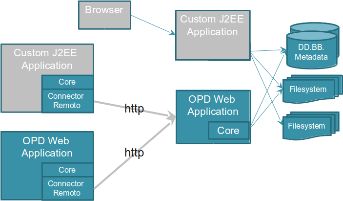

The OpenProdoc architecture is based in a Core component that is resposible of all functionality.
The core can be embedded in a Java application (as in the Swing OpenProdoc Client or in the Portable OpenProc). Also it can be embedded ina a J2EE application (as in the OpenProdoc Web Client).

As an alternative, there is a remote connection that allows to connect the core to the J2EE OpenProdoc application using REST/http. This mode, although has smaller performance, increases security and eases administration, as some elements are centralized in a server (or a server's farm).
